Multiproc Architecture
Clients encode IPC messages; the backend daemon owns FigureModel and SessionGraph, then routes work to Vulkan window agents.
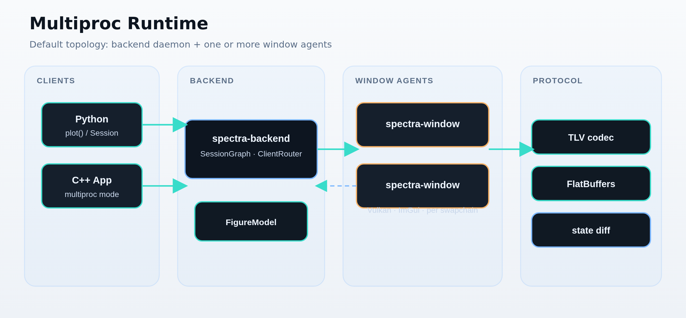
Visual maps of Spectra's runtime, rendering pipeline, IPC, and live data topics — embedded across the docs.
How clients connect to spectra-backend, spawn window agents, and choose
in-process vs multi-process mode.
Clients encode IPC messages; the backend daemon owns FigureModel and SessionGraph, then routes work to Vulkan window agents.

Session lifecycle from socket connect through figure creation, series append, state diff fan-out, and GPU frame render.
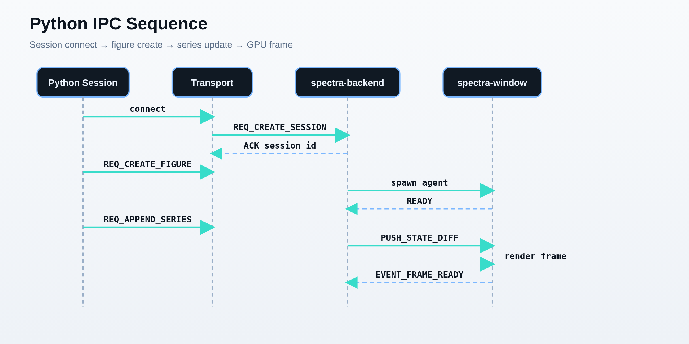
SPECTRA_RUNTIME_MODE selects in-process build/spectra or the default multiproc backend + agent topology.
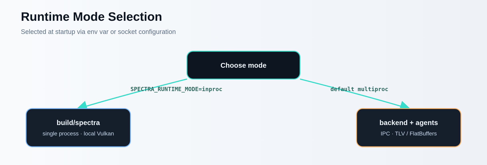
Single-process build/spectra — UI, plot state, and Vulkan in one binary.
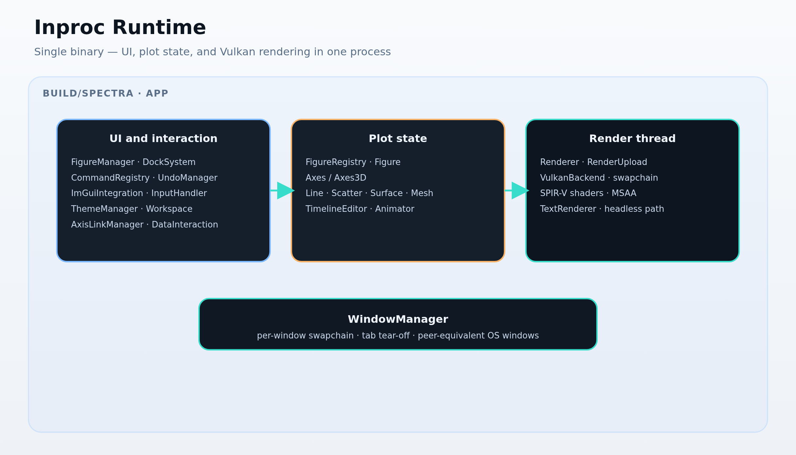
The object hierarchy from App down to series types, and the GPU path from
state change to Vulkan draw calls.
App → Figure → Axes / Axes3D → Series — the stable public object graph mirrored by Python proxies over IPC.
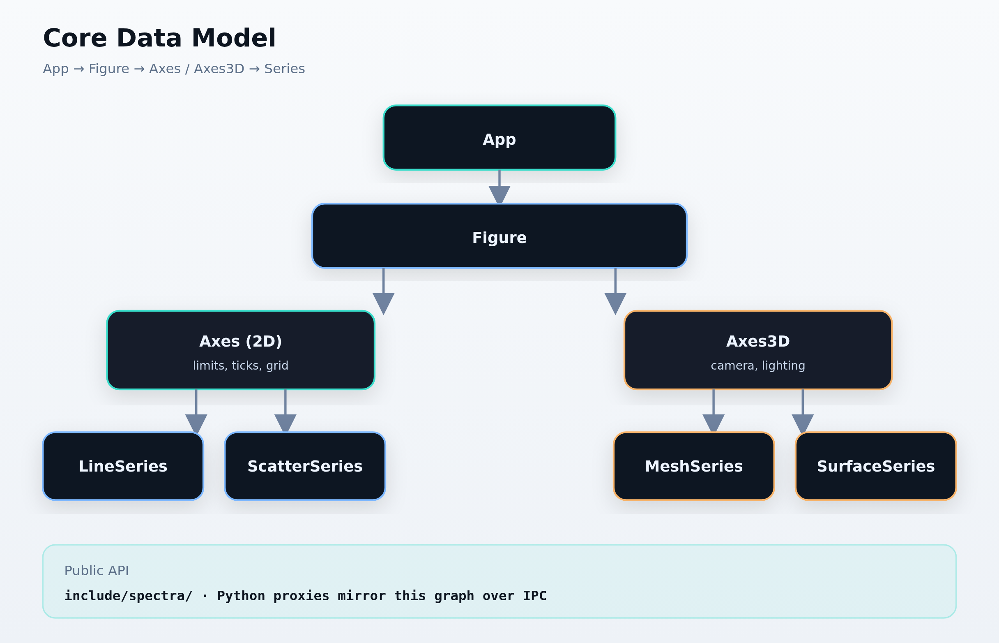
State mutations become draw lists; RenderUpload stages CPU data while SPIR-V shaders and ImGuiIntegration share the swapchain pass.
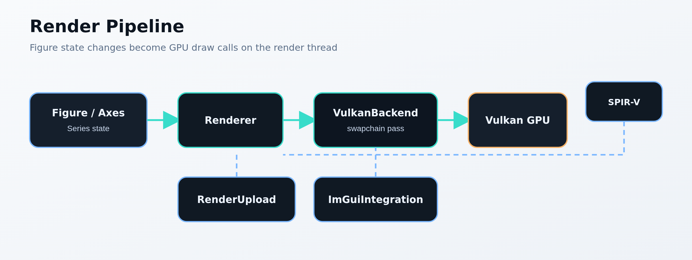
ROS2, PX4, Qt embedding, headless export, plugins, and the experimental WebGPU path.
Background executor introspects messages; SPSC rings decouple the render thread.
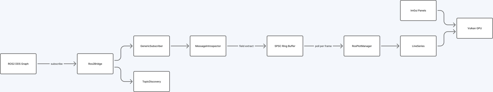
Offline ULog browsing and live MAVLink telemetry share one plot stack.
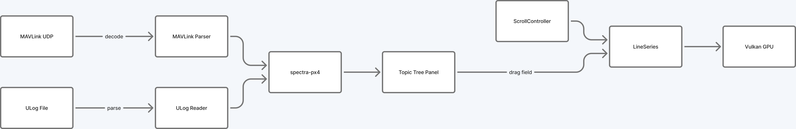
QtRuntime owns Vulkan init; the Qt event loop drives frames.
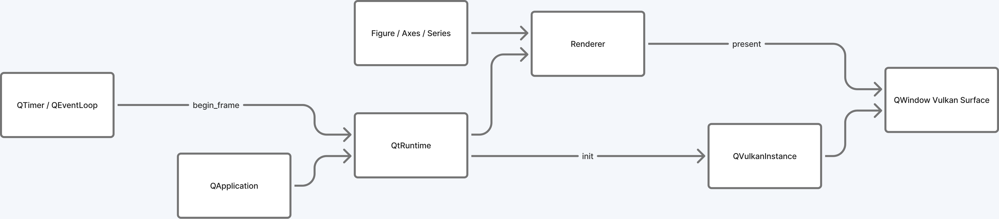
spectra_plugin_init registers commands, transforms, overlays, and more.
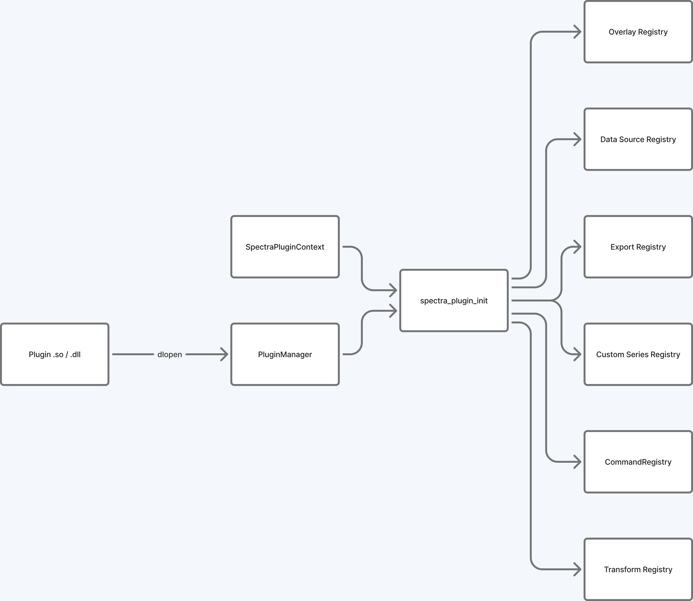
One-liner offscreen render — no window, no daemon, pixels out.
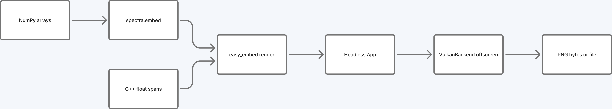
Same C++ core; experimental 2D path via Dawn or browser WebGPU.
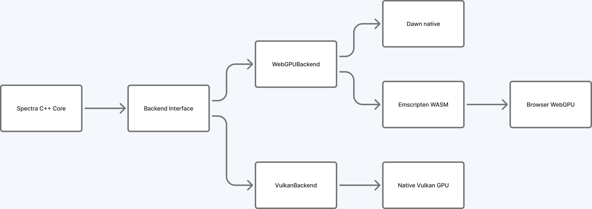
ROS-style named streams published into the backend and plotted on demand from any window.
Publishers survive client disconnect; window agents subscribe by dragging topics onto axes.
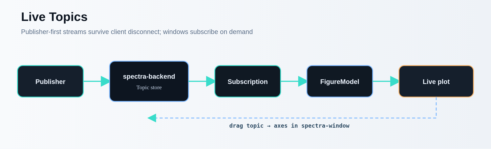